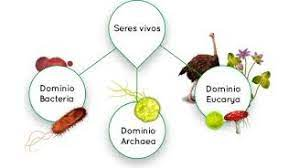
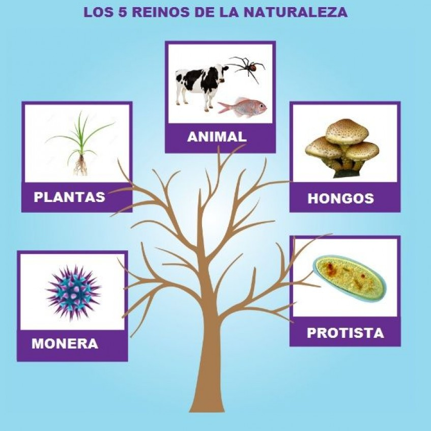
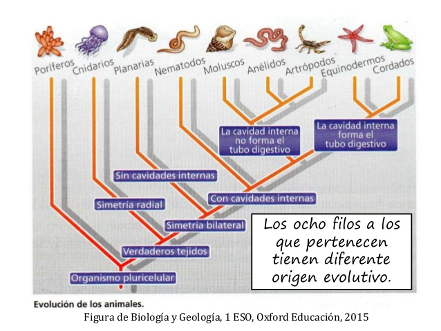
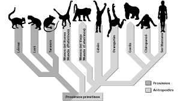
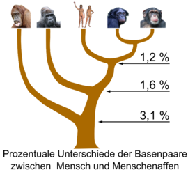
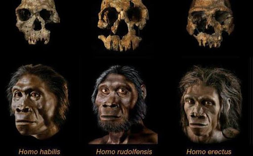

Categorías taxonómicas
Su creador fue Carlos Linneo, uno de los científicos más famosos del Siglo XVIII, como una forma de organizar a todos los seres vivos de acuerdo a sus características comunes.
Carlos Linneo nació el 23 de mayo de 1707 en una pequeña ciudad de la región rural de Småland, Suecia. Fue primer hijo de Christina Brodersonia (1688-1733) y Nils Ingemarsson Linnaeus (1674-1748), un ministro de la iglesia que disponía de un amplio jardín donde se inició en el estudio de la botánica.
En el año 1727 cursó estudios de Medicina en la Universidad de Lund y posteriormente se trasladó a Uppsala porque su universidad disponía de mejores jardines y de especialistas en botánica. Viajó a Holanda, Inglaterra y Francia para ampliar sus estudios. Realizó expediciones botánicas a Suecia central y Laponia por cuenta de la Academia de Ciencias de Upsala.
Detectó errores en la clasificación botánica y comenzó a preparar su propio método de clasificación en 1730. Ya en 1735, se editó su Systema naturae (Sistema natural), el primero de una serie de trabajos en los que presentó su nueva propuesta taxonómica para los reinos animal, vegetal y mineral.Resumió y sintetizó los datos obtenidos por sus predecesores: nomenclatura binaria de los organismos y clasificación artificial de las plantas.
En 1738 fue médico del Almirantazgo y se convirtió en el principal impulsor de la Academia Sueca de las Ciencias. En 1742 fue catedrático de medicina práctica en Uppsala, cargo que cambió por la cátedra de botánica y dietética, que impartió hasta su fallecimiento lo que le permitió dedicarse a tareas de clasificación.
En 1751 publicó Philosophia botanica (Filosofía botánica). Demostró la reproducción sexual de las plantas y dio su nombre actual a las partes de la flor. Ideó un esquema taxonómico basado únicamente en estas partes sexuales, utilizando el estambre para determinar la clase y el pistilo para determinar el orden.
Carl von Linneo falleció el 10 de enero de 1778 en Uppsala, Suecia
Los taxones o táxones son los grupos en los que en biología se clasifica científicamente a los seres vivos, atendiendo a su semejanza y proximidad filogenética. Se estructuran en una jerarquía de inclusión, en la que un grupo abarca a otros menores y este, a su vez, subordinado a uno mayor. A los grupos se les asigna un rango taxonómico o categoría taxonómica que acompaña al nombre propio del grupo.
Los taxones principales, ordenados de menos a más, son: especie, género, familia, orden, clase, filo o división, reino y dominio. Aún así, iniciaremos desde el más grande, hasta el más pequeño
- Dominio:La categoría que separa a los seres vivos por sus características celulares. Por esta razón, existen dos sistemas de dominios: el más antiguo (Prokaryota y Eukaryota), y el más reciente (Archaea, Bacteria y Eukarya). Cabe ,mencionar que Linneo no pensó en éste taxón debido a la ignorancia del sistema celular en ese tiempo, sino que fue Robert Whittaker el que lo propuso

- Reino:Esta categoría divide a los seres vivos por su naturaleza en común. Archaea y Bacteria son tanto reinos (Monera) como dominios, por ser unicelulares, procariontes y diferenciarse en otras características bioquímicas y biofísicas. El dominio de Eukaryota se divide a su vez en cuatro reinos:
- Protista (organismos unicelulares y eucariontes como las células)
- Fungi (organismos heterótrofos como hongos y levaduras)
- Plantae (organismos autótrofos sin locomoción)
- Animalia (organismos heterótrofos y locomotores)

- Filo o división (Sera filo en el Reino Animalia, el los otros será división):La categoría que agrupa a los seres vivos por su mismo sistema de organización. Ejemplo: en el reino animal, los bivalvos, los gasterópodos y los cefalópodos tienen el mismo tipo de tejidos, reproducción, órganos y sistemas, por lo tanto se agrupan en el filo Mollusca.

- Clase. Los filos (o divisiones) se dividen en clases por las características más comunes que hay entre ellos, es decir, por las semejanzas mayores que existan entre los integrantes de un filo. En el filo Mollusca, por ejemplo, hay miles de moluscos y algunos de ellos, por ausencia de concha, se agrupan en la clase Aplacophora.

- Orden: También éste es una división de la categoría anterior; el orden es una división de la clase que también se basa en características comunes de algunos seres vivos dentro de una clase. Dentro de la clase Mammalia, por ejemplo, se encuentra el orden Primates, que contiene a todos los seres vivos con cinco dedos, un patrón dental común y una primitiva adaptación corporal.

- Familia:Es una división de la categoría precedente. Una familia es la agrupación de seres vivos con características comunes dentro de su orden. Ejemplo: el orden Primates incluye la familia Hominidae, que comprende a los primates bípedos.

- Género: Es la categoría taxonómica que agrupa a las especies relacionadas entre sí por medio de la evolución. De la familia Hominidae, por ejemplo, el género Homo comprende a Homo sapiens y sus antecesores más próximos.

- Especie: Es la categoría básica. Es usada para referirse a un grupo de individuos que cuentan con las mismas características permitiendo la descendencia fértil entre ellos. Ejemplo: un ser humano actual (Homo sapiens) puede relacionarse con otro humano de sexo opuesto y reproducirse, teniendo descendencia fértil.

Nomeclatura básica según las categorías taxonómicas
(No todos los taxones están porque no tienen una nomeclatura fija. Ejem: Chordata, mollusca, equinodermata... del reino Animalia)
| Categoría Taxonómica/Reino |
Plantae |
Protista |
Fungi |
Monera |
Animalia |
| División o Filo |
-phyta |
-phyta |
-mycota |
|
|
| Clase |
-opsida |
-phyceae |
-mycetes |
|
|
| Orden |
-ales |
-ales |
-ales |
-ales |
|
| Familia |
-aceae |
-aceae |
-aceae |
-aceae |
-idae |
| El amarillo significa una nomeclatura variable |